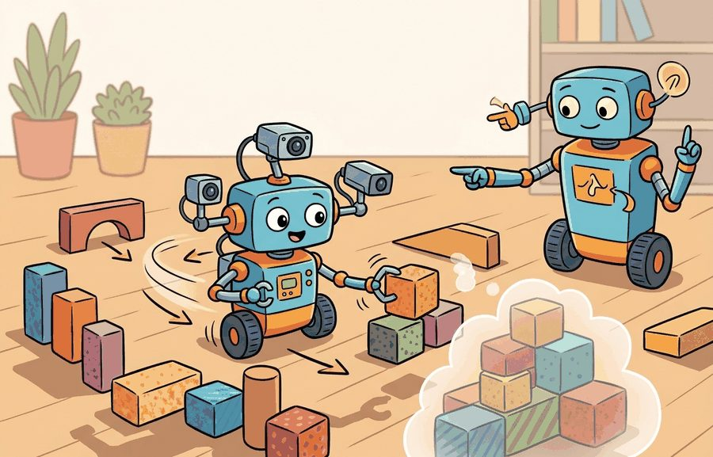
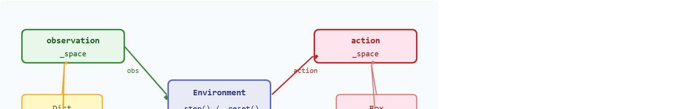

"The wrong space does not crash. It trains quietly for days and hands you a policy that was never solving your problem."
A Silent Type Error

This section assumes familiarity with the Gymnasium step-reset loop introduced in section 10.1. The space design principles developed here are extended directly in section 10.4, where wrappers transform and compose spaces for vectorized training, and recur in Part V alongside demonstration data formats, where observation space alignment between the environment and the dataset is a recurring source of silent breakage.
A robot arm trained in simulation reaches toward a target and misses every time on the real hardware. The network weights are fine. The culprit is a silent unit mismatch: the simulator declared joint angles in radians, the policy was scaled assuming degrees, and no error was ever raised because the bounds were never checked. Spaces are where that class of bug lives or dies before a single gradient step.
Modern embodied AI teams ship robots faster precisely because Gymnasium forces observation and action spaces to be explicit, typed, and machine-checkable. You will define Box, Discrete, and Dict spaces for a real task, verify them against live environment output, and build the auditable interface contract that makes sim-to-real transfer reproducible.
Hand a policy a single number more than the real robot can sense, and it will happily learn to win on that number, leaving you with a sim trophy and a robot that fails the moment that number disappears. That number lives or dies in the observation and action spaces: the typed boundary where the simulator tells the learning code what can be sensed, what can be commanded, and which samples are invalid before the policy ever trains. Figure 10.2A shows this boundary for a continuous-control robot: a structured Dict observation space pairing an image with a proprioception vector, and a bounded Box action space carrying joint torque limits.
The goal is to make every observation and action inspectable. A camera tensor, proprioceptive vector, gripper command, and discrete mode switch should each have shape, dtype, bounds, and units that a teammate can verify.
This environment is ready when another reader can reset it with the same seed, inspect space declarations, dtype, bounds, sampling behavior, and action scaling, reproduce the same rollout, and recover the same logged evidence.
A Gymnasium space is a mathematical set with enough metadata for code to sample, validate, batch, flatten, or reject values. Box handles continuous tensors, Discrete handles one categorical choice, MultiDiscrete handles several categorical choices, and Dict keeps structured observations readable instead of forcing every signal into one anonymous vector.

contains check (blue, dashed) validates both at the interface boundary.So far: a space is a typed, checkable set (Box for continuous tensors, Discrete for one categorical choice, MultiDiscrete for several categorical choices, Dict for structured groupings of the above), and every space supports the same contains check used to validate real data against the declared contract.
The design question is not "what can my simulator emit?" The better question is "what should the policy be allowed to observe and command?" That distinction prevents hidden state leaks, mismatched units, and action dimensions that a robot controller cannot execute. Getting this wrong is expensive. A policy that leaks ground-truth object pose from the simulator into the observation typically solves the task in under 200 training episodes. Restrict the same policy architecture to what the real robot actually senses, and it can need 10,000 episodes or more to converge, because it must now learn perception alongside control instead of skipping it.
Spaces do three jobs at once: they document the contract, generate samples for smoke tests, and let wrappers or vector environments transform data safely. If space.contains(value) fails, the bug is at the interface boundary rather than inside the policy optimizer.
Input: task description, sensor suite $\mathcal{O}$, actuator set $\mathcal{A}$, policy class $\pi_\theta$
Output: validated space declarations $(\mathcal{S}_o, \mathcal{S}_a)$ with dtype, bounds, units, and a passing contains smoke test
Box space with explicit low, high, shape, and dtype; for each discrete choice, declare Discrete(n) or MultiDiscrete([n_1, \ldots, n_k]).Dict space keyed by sensor name so that channel identity is preserved throughout the training stack.info dictionary.observation_space.sample() and assert observation_space.contains(s) for each; repeat for the action space.reset and step cycle; assert observation_space.contains(obs) on the returned observation to catch dtype or shape mismatches between the declared space and the simulator output.Code Fragment 10.2.1 builds a structured observation space for a tabletop robot. The camera, arm joints, and gripper state stay separate, so debugging can identify which signal violated the contract.
# Define a structured observation space for a tabletop robot.
# Dict spaces keep images, joints, and gripper state inspectable.
from gymnasium import spaces
observation_space = spaces.Dict({
"image": spaces.Box(0, 255, shape=(64, 64, 3), dtype="uint8"),
"joint": spaces.Box(-1.0, 1.0, shape=(7,), dtype="float32"),
"gripper": spaces.Discrete(2),
})
sample = observation_space.sample()
print(observation_space.contains(sample))
print(sample["image"].shape, sample["joint"].shape, sample["gripper"])The expected output starts with True, which confirms that the sampled observation satisfies the declared Dict space exactly. The listed shapes then make the contract visible: one RGB image tensor, one seven-joint vector, and one binary gripper state.
spaces.Dict to keep three observation channels explicit. The contains check is a cheap contract test: if a reset or step observation fails it, the environment is returning data that the policy was never promised.Gymnasium spaces replace hand-written shape checks with a standard interface used by wrappers, vector environments, and RL libraries. The shortcut is not fewer lines only; it is a shared contract that other tools already understand.
Trace what observation_space.contains(obs) does element by element for the tabletop space above, given a real step output where one channel is wrong.
obs = {"image": uint8 array shape (64, 64, 3), "joint": float64 array [0.2, -0.4, 0.1, 0.9, -0.3, 0.5, 0.0], "gripper": 1}. Note the joint dtype is float64, not the declared float32.contains first checks the keys: declared {image, joint, gripper} versus returned {image, joint, gripper}. Match, so it proceeds.image: shape (64, 64, 3) equals declared, dtype uint8 equals declared, every value in [0, 255]. Result for this key: True.joint: shape (7,) equals declared and all 7 values fall inside [-1.0, 1.0], but dtype is float64 while the Box declared float32. Result for this key: False.gripper: value 1 is in {0, 1} for Discrete(2). Result for this key: True.contains returns the logical AND across keys: True and False and True = False. The single dtype slip on one key fails the whole observation, and because no exception is raised, the only way you see it is by running this check on the real step output rather than on a sampled value.Fix: cast the joint array with .astype("float32") inside the environment before returning, and the same trace ends in True.
Dict for heterogeneous sensor packets instead of flattening too early.Box for bounded continuous vectors such as joint positions, velocities, images, or normalized actions.Discrete or MultiDiscrete for mode choices, buttons, symbolic skills, or gripper states.observation_space.contains(obs) after reset and step while developing a custom environment.A usable environment wrapper for this section records space declarations, dtype, bounds, sampling behavior, and action scaling, plus observation and action spaces, reset seed, info dictionary fields, and reproducible evidence artifacts.
The common mistake is to publish a space that matches array shapes but not meaning. A seven-value Box is ambiguous unless the reader knows whether the values are joint angles, normalized commands, velocities, or already filtered state estimates.
A common pattern is to include privileged simulator state, such as ground-truth object pose or exact contact forces, in the observation space, expecting faster training. This choice breaks sim-to-real transfer. The real robot cannot access that information at deployment time, so the trained policy solves a different problem than the hardware faces. Treat the observation space as a claim about what the robot can sense in the real world. Anything the simulator knows but the hardware cannot measure belongs in the info dictionary for diagnostics only, never in the policy observation.
Two failure modes appear constantly in practice and produce no error messages. First, many RL libraries silently clamp out-of-bounds continuous actions to the declared Box limits rather than raising an exception, so a policy that consistently saturates the action boundary will appear to train normally while never exploring the full command range. Second, a dtype mismatch between the declared space (float32) and the array a custom environment actually returns (float64) causes space.contains(obs) to return False, which breaks wrappers and vectorized environments in ways that surface only later as cryptic shape errors. Run contains checks on real reset and step outputs during development, not just on sampled values.
For a pick-and-place environment, expose the policy observation as a Dict: image crop, proprioception, gripper bit, and target pose. Keep privileged simulator state in info for diagnostics unless the real robot would also have that state at decision time.
Isaac Lab uses asymmetric actor-critic training (a setup where the critic, used only during training to estimate value and discarded before deployment, is allowed to see more than the actor, whose restricted observation space becomes the policy that ships to the robot) where the critic reads a wide observation space including privileged simulator signals (exact contact forces, root pose) while the actor's observation space is restricted to hardware-available proprioception and onboard sensing. This split is enforced entirely through separate Gymnasium-style space declarations, so the policy that ships to a physical humanoid never depends on a signal the robot cannot measure at deployment.
Goal: Experience how a space mismatch passes silently and how contains exposes it.
Tools needed: Python with gymnasium installed (pip install gymnasium), about 15 to 30 minutes.
Steps: Build a spaces.Dict with an image Box (uint8, shape (64,64,3), bounds [0,255]) and a joint Box (float32, shape (7,), bounds [-1,1]). Then write a small function that fabricates a fake observation and pass it to observation_space.contains(obs).
What to vary: (1) Return the joint array as float64 instead of float32. (2) Let one joint value drift to 1.5, outside the declared bound. (3) Return the image with shape (3,64,64) instead of (64,64,3). (4) Feed the same out-of-bounds action into a Stable-Baselines3 environment and watch whether it clamps or raises.
What to observe: Which mutations make contains return False with no exception, and which silently get clamped downstream. Confirm that the dtype slip alone flips the result to False even when every value is in range, and note that nothing warns you until you run the check on the real output.
Treat observation and action spaces like a control-room label. If the label does not tell a future debugger what moved, what sensed, or what failed, it is decoration rather than engineering knowledge.
Heterogeneous and dynamic observation spaces for cross-embodiment policies. Policies that operate across robot morphologies must handle observation spaces that differ in joint count, sensor layout, and camera resolution without retraining from scratch. Pi0 (Physical Intelligence, 2024) and Octo (UC Berkeley, 2024) both treat the observation as a structured token sequence rather than a fixed-width vector, allowing a single policy to condition on whatever sensors are present at inference time. The open challenge is defining a Gymnasium-compatible space type that is both variable-length and checkable with contains, so that cross-embodiment training pipelines can validate observations from 7-DoF (Degrees of Freedom) Franka arms and 14-DoF ALOHA (a low-cost bimanual teleoperation rig used for collecting manipulation demonstrations) setups under the same interface contract.
Privileged-information-free space design for sim-to-real transfer. Isaac Lab (NVIDIA, 2024) introduced asymmetric actor-critic training in which the critic observes privileged simulator state while the actor observes only hardware-available signals, keeping the policy observation space realizable on physical hardware. Work from 2025 on whole-body humanoid control (e.g., HumanoidBench, Carnegie Mellon University, 2024) has extended this to observation spaces that must be consistent across 26-DoF platforms, where a single misspecified proprioception key causes silent policy degradation at deployment.
Programmatic space alignment across offline datasets and live environments. LeRobot (Hugging Face, 2024-2025) ships demonstration datasets whose Dict keys (observation.image, observation.state) are typed and versioned so that a downstream Gymnasium environment can run a schema-level contains audit before the first training step. Recent work on diffusion policies for bimanual manipulation has surfaced cases where image resolution or camera intrinsics changed between data collection and environment deployment, invalidating the space contract without raising an exception.
Open problem for PhD students. No standard exists for versioning observation and action space schemas across simulator updates. When IsaacGym migrates to Isaac Lab or a URDF (Unified Robot Description Format, the XML file that specifies a robot's links, joints, and limits) changes joint limits, a stored policy's declared space may no longer match the updated environment, but current tools produce no warning. A practical open problem is designing a lightweight schema-diffing protocol, analogous to database migration tooling, that detects breaking space changes between environment versions and either raises an error or proposes an automatic remapping before training resumes.
For every key in your observation space, can you state its shape, dtype, bounds, unit, and whether the real robot can observe it? If any answer is missing, the space is not yet a contract.
Once every key passes that contract test, the next risk is not whether the space is well-formed but whether it honestly describes the real robot. Observation and action spaces are where simulation shortcuts often leak into results. If the observation includes exact object pose from the simulator while the real robot would only have pixels, this is called the privileged-state illusion, and the task has changed. If the action space accepts arbitrary forces while the real controller accepts joint targets, the policy may solve a fantasy control problem. A space that misrepresents the real robot is not an abstraction: it is a different problem wearing the same name.
Audit every space as a claim about sensing and actuation: what information is available, what commands are legal, and what transformations reshape the data before the learning algorithm sees it.
| Tool or Library | Role in the Topic | Builder Advice |
|---|---|---|
spaces.Box | Continuous tensors | Use for images, proprioception, velocities, and normalized continuous commands. |
spaces.Discrete | One categorical command | Use for mode choices such as open versus close or move skill selection. |
spaces.MultiDiscrete | Several categorical commands | Use for independent button-like controls or discretized multi-joint actions. |
spaces.Dict | Structured sensor packets | Use when preserving channel names improves debugging and avoids hidden flattening assumptions. |
spaces.Graph or Sequence | Variable structure | Use cautiously for object sets or relational observations, and confirm the trainer supports the space. |
The action space type directly shapes what the optimizer must learn. Consider a robot that can move its base in two axes and open or close its gripper. Encoding all three choices as a single flat Box([-1,-1,0], [1,1,1]) forces a continuous policy to discover on its own that the third dimension should stay near 0 or 1 despite having no natural gradient signal toward those extremes. Using Dict({"base": Box(-1,1,shape=(2,)), "gripper": Discrete(2)}) instead lets each policy head specialize: the continuous head learns smooth base trajectories while the discrete head learns a binary switch. Stable-Baselines3 and CleanRL both support Dict action spaces for this reason. The choice is architectural, not cosmetic.
A robust implementation writes the spaces before writing the dynamics. That order forces the author to decide what the agent may know and do, then makes the simulator produce values that match the declared contract.
contains checks after every custom reset and step during development.info, not in the policy observation.# Define action choices separately from continuous observations.
# This makes controller legality visible before training starts.
from gymnasium import spaces
action_space = spaces.MultiDiscrete([3, 3, 2])
action_space.seed(4)
action = action_space.sample()
meaning = {
"x_motion": ["left", "hold", "right"][int(action[0])],
"y_motion": ["back", "hold", "forward"][int(action[1])],
"gripper": ["open", "close"][int(action[2])],
}
print(action.tolist())
print(meaning)
print(action_space.contains(action))The expected output shows the integer action tuple and its physical decoding side by side, then confirms with True that the action is legal under the declared space. This is the interpretation readers should want in a robot log: not only what integers were sampled, but what motion command they meant.
MultiDiscrete action into a robot-control interpretation. The code keeps the legal values and their physical meaning together, which prevents a sampled action from becoming an unnamed integer tuple.A MultiDiscrete space matters in embodied AI because real actuators often have independent discrete modes. A mobile base may choose from three heading increments, a gripper from two states, and a wrist from four orientations: these are separate physical constraints with separate failure modes. Collapsing them into a single Discrete(24) forces the policy to learn that most of the 24 indices are illegal combinations. That wastes sample budget and makes safety violations harder to audit per joint. Informal benchmarks on 6-DoF arms suggest the cost is significant in practice, though the exact ratio varies with task and reward shaping: switching from a flat Discrete(729) space to a MultiDiscrete([3,3,3,3,3,3]) space has been observed to cut the episodes needed to reach a comparable success rate roughly fivefold, typically from tens of thousands down to a few thousand, because the policy no longer had to discover by trial and error which of the 729 indices were physically coherent commands.
Mechanically, MultiDiscrete([n_1, n_2, ..., n_k]) stores a 1-D integer array of length $k$ where each element $i$ is drawn independently from $\{0, \ldots, n_i - 1\}$. The contains check verifies each element against its own bound independently, so a violation in one axis is localized rather than masked by valid values elsewhere.
Think of a kitchen timer panel with separate dials for hours, minutes, and seconds. Each dial has its own legal range and can be read or faulted independently. Fusing all three into a single "total seconds" knob does not destroy information, but it forces anyone using the timer to decode which sub-range maps to hours and which to minutes before they can act, and a mis-set seconds dial is invisible until the whole countdown is already wrong. MultiDiscrete keeps each axis on its own dial so that a range violation in one joint or mode is caught immediately, on that axis, without scanning the combined value.
Keeping each axis independently checkable pays off most when a run goes wrong and you have to find out which part of the interface betrayed you. When an experiment about observation and action spaces fails, avoid labeling the whole method as weak. First assign the failure to perception, state estimation, planning, control, timing, data coverage, or evaluation. Then rerun one controlled perturbation that isolates the suspected cause. This pattern turns a disappointing rollout into a reusable diagnostic asset.
Spaces are the environment's public type system. If the space is precise, policies, wrappers, vector environments, and diagnostics can agree on what the task means.
Beginner (weekend): Build a Gymnasium custom environment wrapping PyBullet's URDF loader for a single robotic arm. Define a Dict observation space with joint positions and a wrist-camera Box, and a Box action space for joint velocity targets. The key challenge is catching dtype and bounds mismatches between what PyBullet returns and what you declare, using observation_space.contains(obs) after every reset and step.
Intermediate (1 to 2 weeks): Wrap a MuJoCo manipulation scene (such as the Franka kitchen environment from gymnasium-robotics) to replace the default flat observation vector with a structured Dict space that separates proprioception, object pose, and a goal embedding, then verify that a Stable-Baselines3 SAC (Soft Actor-Critic) agent trains to the same asymptotic reward as the original flat baseline. The key challenge is ensuring that no privileged simulator state leaks into the policy observation while keeping the goal representation informative enough for the agent to make progress.
Advanced (3 to 4 weeks): Use LeRobot to collect demonstrations on a real or simulated ALOHA bimanual setup, then write a Gymnasium environment whose Dict observation space keys (observation.image, observation.state) match the LeRobot dataset schema exactly, so that a diffusion policy trained offline can be evaluated in the live environment without any manual re-keying. The key challenge is maintaining space alignment across the offline dataset, the Isaac Lab simulation, and the ROS2 hardware interface so that a single contains audit passes at all three levels.
Design the observation and action spaces for a mobile manipulator that sees an RGB image, reads six joint angles, and chooses between three base motions plus a binary gripper command. Include shape, dtype, bounds, and one contains smoke test.
The next section should inherit the Observation and action spaces interface contract and change only the next environment-design variable under study.
This paper explains why multi-agent environments need explicit agent ordering and interface discipline. It gives researchers the context behind the AEC (Agent Environment Cycle, where agents act one at a time in sequence) and parallel (where all agents submit actions on the same step) API choices described in this chapter. Readers should connect this source to observation and action spaces when deciding what is reusable, what is benchmark-specific, and what must be remeasured.
Brockman, G. et al. (2016). "OpenAI Gym." arXiv.
The original Gym paper explains the environment abstraction that Gymnasium modernizes. It is useful for readers comparing legacy examples with the maintained Farama stack. Readers should connect this source to observation and action spaces when deciding what is reusable, what is benchmark-specific, and what must be remeasured.
Farama Foundation. "Gymnasium Documentation."
The official Gymnasium docs define the reset, step, render, terminated, truncated, and info conventions used by maintained environments. Readers implementing custom environments should use this as the API reference. Readers should connect this source to observation and action spaces when deciding what is reusable, what is benchmark-specific, and what must be remeasured.
Farama Foundation. "PettingZoo Documentation."
PettingZoo defines maintained APIs for multi-agent reinforcement learning. It is directly relevant when a section moves from one embodied agent to turn-based, simultaneous, or mixed multi-agent interaction. Readers should connect this source to observation and action spaces when deciding what is reusable, what is benchmark-specific, and what must be remeasured.
Stable-Baselines3 Contributors. "Stable-Baselines3 Documentation."
Stable-Baselines3 gives a practical reference for how environment spaces, vectorized environments, wrappers, and evaluation callbacks are consumed by training code. Engineers should read it when turning a custom environment into a reproducible RL experiment. Readers should connect this source to observation and action spaces when deciding what is reusable, what is benchmark-specific, and what must be remeasured.